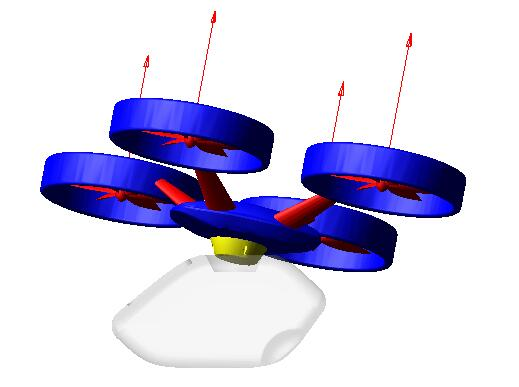

|
Yaolei Shen (沈垚磊) |
Projects
- 2020.11-NOW Modeling and control for a bird-scale flapping-wing aerial vehicle (Master's project) [PDF]
This project is relevant to my master's diploma project. In this project, the mathematic model of the previous flapping-wing aerial vehicle prototype was derived. Based on this model, the robust attitude controller and path tracking controller were also designed. And, these controllers will be implemented on the physical vehicle protype to test the performance.


- 2020.11-2020.12 Autonomous docking system of rotorcraft (Project participator)
The project is source from School of Construction Machinery, Chang’an University. The main target of this project is to design a two-mode mobile vehicle including rotoring flight and wheeled mobile. In this project, I was responsible for the crash analysis of docking system between rotorcraft and ground mobile platform at controlled condition.
 - 2018.07-2020.06 Seagull inspired flapping-wing aerial vehicle (Project participator) [Video1][Video2][Video3]
This project is a subproject of the Nation Key Research and Development Program Intelligent Robot Project of China which was source from School of Aeronautics of Northwestern Polytechnical University. As a participator, my contributions are:- Design of the bio-inspired flapping-wing mechanism
- Production of the vehicle prototype
- Design and production of the rotary experiment platform
- 2016.05-2018.06 Design of locust inspired jumping robot (Team leader) [PDF]
This project is the subproject of the National Innovation Training Program for College Students. My team was aim to design and product a bio-inspired robot which has the excellent capacity that jump like a locust. As a team leader, my contributions are:- Design of the bio-inspired jumping mechanism
- Robot jumping process modeling
- Production of the robot prototype

Awards
- 2021, First-class academic scholarship of Northwestern Polytechnical University
- 2019, First-class academic scholarship of Northwestern Polytechnical University
- 2019, Excellent Graduation Project for Undergraduates of Northwestern Polytechnical University
- 2018, Excellent conclusion of National Innovation Training Program for College Students of China
- 2018, First-class academic scholarship of Northwestern Polytechnical University
- 2017, First-class academic scholarship of School of Mechanical Engineering, Northwestern Polytechnical University